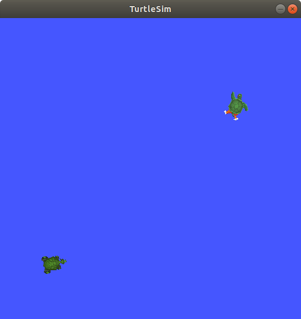

了解服务
目标： 使用命令行工具学习ROS 2中的服务。
教程级别: 初学者
时间: 10分钟
内容


先决条件
在本教程中提到的一些概念，如 节点 和 话题，在系列教程中已经介绍过了。
你需要安装 turtlesim 包。
像往常一样，在:doc:`每个新开的终端中 <../Configuring-ROS2-Environment>`都不要忘记加载ROS 2。
任务
1 设置
启动两个 turtlesim 节点，/turtlesim 和 /teleop_turtle。
打开一个新的终端并运行：
ros2 run turtlesim turtlesim_node
打开另一个终端并运行：
ros2 run turtlesim turtle_teleop_key
2 ros2 service list
在新终端中运行 ros2 service list 命令将返回当前系统中所有活动服务的列表：
/clear
/kill
/reset
/spawn
/teleop_turtle/describe_parameters
/teleop_turtle/get_parameter_types
/teleop_turtle/get_parameters
/teleop_turtle/list_parameters
/teleop_turtle/set_parameters
/teleop_turtle/set_parameters_atomically
/turtle1/set_pen
/turtle1/teleport_absolute
/turtle1/teleport_relative
/turtlesim/describe_parameters
/turtlesim/get_parameter_types
/turtlesim/get_parameters
/turtlesim/list_parameters
/turtlesim/set_parameters
/turtlesim/set_parameters_atomically
你会发现两个节点都有相同的六个以``parameters``结尾的服务。ROS 2中几乎每个节点都有这些基础设施服务，参数就是构建在这些服务之上的。下一个教程将更多地介绍参数。在本教程中，将省略对参数服务的讨论。
现在，让我们专注于turtlesim特定的服务，/clear、/kill、/reset、/spawn、/turtle1/set_pen、/turtle1/teleport_absolute``和/turtle1/teleport_relative``。你可能还记得在 使用turtlesim、ros2和rqt 教程中使用rqt与其中一些服务进行交互。
3 ros2服务类型
服务具有描述服务的请求和响应数据结构的类型。服务类型的定义类似于主题类型，但服务类型由请求部分和响应部分组成。
要找出服务的类型，请使用以下命令：
ros2 service type <service_name>
让我们来看一下 turtlesim 的 /clear 服务。在新的终端中，输入以下命令：
ros2 service type /clear
预期的输出应为：
std_srvs/srv/Empty
Empty 类型表示服务调用在发送请求时不发送任何数据，在接收响应时也不接收任何数据。
3.1 ros2 service list -t
要同时查看所有活动服务的类型，可以将``--show-types``选项（缩写为``-t``）附加到``list``命令后面：
ros2 service list -t
将返回：
/clear [std_srvs/srv/Empty]
/kill [turtlesim/srv/Kill]
/reset [std_srvs/srv/Empty]
/spawn [turtlesim/srv/Spawn]
...
/turtle1/set_pen [turtlesim/srv/SetPen]
/turtle1/teleport_absolute [turtlesim/srv/TeleportAbsolute]
/turtle1/teleport_relative [turtlesim/srv/TeleportRelative]
...
4 ros2 service find
如果您想找到特定类型的所有服务，请使用以下命令：
ros2 service find <type_name>
例如，您可以通过以下方式找到所有“Empty”类型的服务：
ros2 service find std_srvs/srv/Empty
将返回：
/clear
/reset
5 ros2 interface show
您可以从命令行调用服务，但首先需要了解输入参数的结构。
ros2 interface show <type_name>
在“/clear”服务的类型“Empty”上尝试一下：
ros2 interface show std_srvs/srv/Empty
将返回：
---
--- 分隔了请求结构（上方）和响应结构（下方）。但是，正如您之前学到的那样，Empty 类型不发送或接收任何数据。因此，它的结构自然为空白。
让我们来查看一个发送和接收数据的服务类型，比如 /spawn。通过 ros2 service list -t 的结果，我们知道 /spawn 的类型是 turtlesim/srv/Spawn。
要查看 /spawn 服务的请求和响应参数，请运行以下命令：
ros2 interface show turtlesim/srv/Spawn
将返回：
float32 x
float32 y
float32 theta
string name # Optional. A unique name will be created and returned if this is empty
---
string name
--- 行上方的信息告诉我们调用 /spawn 需要的参数。x、y 和 theta 决定了生成的乌龟的二维姿态，而 name 显然是可选的。
下划线以下的信息在这种情况下不是您需要了解的内容，但它可以帮助您理解调用返回的响应的数据类型。
6 ros2 服务调用
既然您知道了什么是服务类型，如何找到服务的类型，以及如何找到该类型参数的结构，您可以使用以下命令调用服务：
ros2 service call <service_name> <service_type> <arguments>
<arguments> 部分是可选的。例如，您知道 Empty 类型的服务没有任何参数：
ros2 service call /clear std_srvs/srv/Empty
该命令将清除乌龟绘制的所有线条，使得乌龟仿真窗口变空白。

现在让我们通过调用``/spawn``并设置参数来生成一个新的乌龟。在从命令行进行服务调用时，输入的``<arguments>``需要使用YAML语法。
输入以下命令：
ros2 service call /spawn turtlesim/srv/Spawn "{x: 2, y: 2, theta: 0.2, name: ''}"
您将会看到方法式的视图，了解正在发生的情况，然后获得服务的响应：
requester: making request: turtlesim.srv.Spawn_Request(x=2.0, y=2.0, theta=0.2, name='')
response:
turtlesim.srv.Spawn_Response(name='turtle2')
您的乌龟仿真窗口将立即更新，显示新生成的乌龟：
